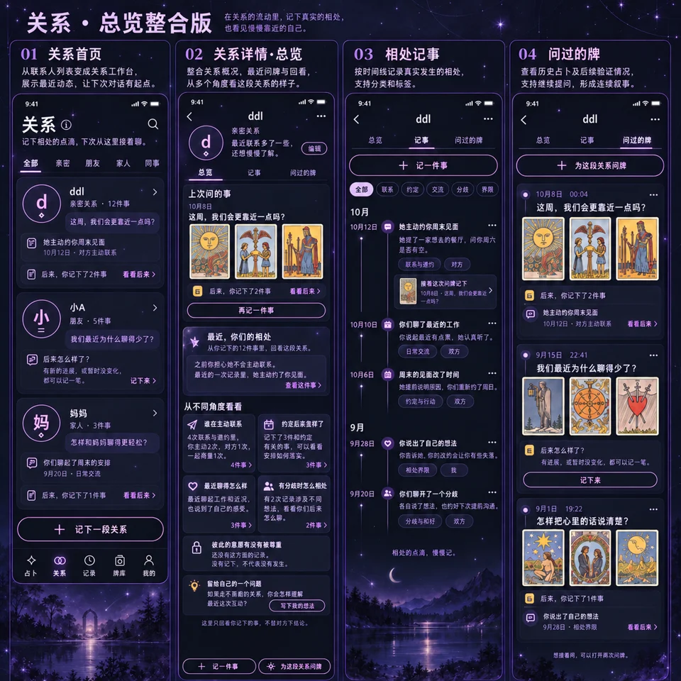

AI 产品能力
- Prompt 工程体系设计
- Schema 结构化输出
- 采样参数策略
- 上下文 / Token 管理
- 幻觉校验
- 评测集搭建
- Agent 流程编排
- 多模态视频 / 图像生成
个人介绍
我从用户的决定出发，把 AI 的能力边界变成产品规则，再用原型和评测检验方案。
AI 产品经理 · AIGC 产品 · 多模态视频生成产品

实现扇面选牌、流式解读与关系管理，并以同题对照检验 AI 回答。
根据问卷、访谈和走查梳理找店断点，用地图与列表联动的四态设计回应定位和比较需求。
把生成状态、失败重试和时间点审片做进浏览器，演示团队交接流程。
项目
AI 解读、地图探索与视频团队协作。

世界逆位提示「事情尚未收尾」。
针对同一个跳槽问题，回答给出「偏‘否’的倾向」。
来源为一次线上走查。读者是否认为 AI 更有帮助，仍需盲评。查看完整对照。
AI-PM
个人项目 · 已上线。牌面解读和关系管理均有代码与产品证据，留存和模型质量待实测。
让首次抽牌的用户理解牌义怎样关联当下的问题，也让反复关注同一段关系的人带着已确认的经历回看和追问。
单次解读解决「这张牌和我的问题有什么关系」。连续使用时，用户还要回看同一段关系、补记发生的事并继续思考。重复交代经历是业务痛点，模型把早期推测混成后续事实是 AI 特有风险。
机会假设 · 结构化关系账和明确的记忆确认步骤，能减少重复输入，并降低对错人、把猜测当事实的风险。需要实测触发频率与用户反馈。
已走查线上抽牌流程，并采集一条关于跳槽的真实回答。下表是按公开定位做的桌面参照，提示词、Schema 和独立质检等内部实现需要另行实测。
| 参照 | 可借鉴能力 | 本任务的取舍 |
|---|---|---|
| Labyrinthos | 学习牌义与读牌 | 适合作为牌义学习参照。连续关系回看与来源治理需要分开验证。 |
| Day One | 长期日记与历史回看 | 适合作为记事参照。牌位、用户问题和关系上下文仍需专门组织。 |
| ORAE | 问牌、记事与关系回看 | 用一次解读连接长期上下文。增加了确认和授权成本。 |
产品切入点 · 关系管理把单次解读、用户确认的经历和后续回看放入同一条链路。
产品目标是让用户找到可核实的下一步，并能回来查看同一段关系。范围先覆盖单次解读、记事与当前关系召回。对跨关系串线、过度确定的回答和写入错误设门槛。事件档案与模型窗口分离，近期窗口最多 20 件。

| 策略 | 已实现的产品规则 | 为何这样做 |
|---|---|---|
| 上下文与 Token | 当前关系隔离、最近 20 件事件入窗口，档案独立保留。 | 控制上下文，让跨关系信息在进入模型前被隔离。 |
| Prompt 与参数 | 按任务组装问题、牌位、正逆位等上下文；牌阵推荐默认 temperature 0.4，可配置。 | 推荐强调稳定，解读要处理具体语境。双采样模式和 Few-shot 对照待补。 |
| Schema 与来源 | 候选带证据片段，来源由服务端写入；待确认条目不参与召回。 | 提取错误会在校验或用户确认阶段被拦截。 |
| 质检与异常 | 模型推断只可留在假设层；上游失败时采用规则推荐或提供重试。 | 分开检验接口成功、内容可靠和记忆写入。 |
权衡过的两种做法是把所有历史都带入和用有限窗口召回。现有方案选择后者，代价是更早的细节不会默认进入当次解读。
MVP 的线上解读可用，关系账与回看有实现。拟用固定牌、牌位、正逆位和问题做五组盲评，并向关系记忆评测集加入跨对象误召回、推断越权、未确认候选等反例。
| 证据 | 观察或复现 | 下一步 |
|---|---|---|
| 线上走查 · 同题世界逆位 | 固定牌义是「事情尚未收尾」。AI 摘录给出「偏否」，可能被读成求职结论。 | 拟改成先提示待核实条件，再问一个反思问题。改后结果待测。 |
| 接口回归 · 上游 502 | 先输出片段再中断。接口预期发出错误事件，不保存半段解读，不扣配额。 | 复查 Session、readingId、requestId 和模型错误类别。 |
| 用户反馈 | Android 用户反馈「继续要点好几次」，模拟器复验修复后按钮两端均能一次响应。 | 该反馈支持操作可用性。内容质量的正负面反馈仍待收集。 |
线上「偏否」容易压过牌义的不确定性。下轮把「是否回答得贴合」与「是否把推测写成结论」分开标注。关系样例则对比开关授权和一段历史被更正后的结果。长期可引入经审阅的检索知识库与用户自定义示例，先做可追溯评测再扩大召回。
PDE
打开线上 Demo，可按洗牌、切牌、扇面选牌、翻面落位、继续读牌的顺序体验。此处展示抽牌交互、动画状态与结果衔接。

早期方案用牌轮浏览，现版用底部扇形手牌承接滑动、点按和上甩。上方保留目标牌位，让牌的去向清楚可见。底部预留操作区，避免翻牌途中发生布局位移。查看早期牌轮画面。
待选 → 已选 → 飞行与翻面 → 落位揭晓 → 继续。实现分别记录已抽出、飞行中和已落位的牌。选牌时测量目标牌位，飞行中拦截再次选牌，保留 350 毫秒的点击间隔。全部落位后才显示「继续」。牌详情从原位放大，关闭时回到原位。
390px Chromium 已走通至流式解读，1440px 桌面首页保持单列居中。窄屏的三个实拍关键帧见成品预览。完整键盘抽牌路径待验证，扇面当前缺少 Tab 焦点入口。现有版本始终播放完整动效，减少动效下的揭晓方案待补。
Android 用户反馈「继续要点好几次」。复现时文字能响应，胶囊边缘仍处于禁用态。修复在启用状态变化时重新挂载原生点击控件。提交记录显示，模拟器中点两端都可一次响应，QA 清单也补上了边缘点按。

分母为原稿问卷行为分群的 262 人。此处展示其中两类。查看调研原稿。
AI-PM
体验设计项目 · 研究与原型已完成。AI 辅助筛选为扩展方案，当前证据来自原稿。
让周末探店者和差旅用户在地图中完成发现、定位和比较，减少跨 App 核对。
现有链路中，内容负责种草，地图负责定位，另一些页面负责核对营业和口碑。访谈与走查发现同类推荐堆叠、详情难扫读，以及收藏点和行程的关系不清。拟加入 AI 时，额外风险是把营业时间、距离或评价编成确定理由。核心任务收敛为在陌生地点附近选到符合条件的一餐。
研究包含问卷、访谈、体验走查与竞品整理。问卷表明偏探索与偏效率的用户对信息密度的要求不同。
| 原稿参照 | 优势 | 切入点 |
|---|---|---|
| 百度地图 | 周边与导航衔接，地点信息标准化 | 把内容探索和空间联动放进同一条路径。 |
| 美团与大众点评 | 交易闭环、榜单与评价 | 将比较所需的距离、评分和状态提前展示。 |
| 抖音与小红书 | 短视频和图文有探索氛围 | 减少从种草内容跨应用回地图核对。 |
查看问卷原稿。原稿比较的是体验链路，AI 内部技术能力尚未实测。
目标是在同一地图体验内完成筛选和决策。明确条件用规则；输入为自然语言且含多项偏好时，才探索 AI 拆解意图。地点信息来自可追溯字段，缺失营业状态须标明待确认；限制候选数量与调用成本。
| 路径 | 适用场景 | 取舍 |
|---|---|---|
| 规则筛选 | 目标明确，按距离、类别和营业筛选 | 可控且便宜。作为原型主路径及异常回退。 |
| AI 解释 | 条件较多或说法模糊 | 拟只将候选 ID、字段出处和理由交给输出层。字段缺失走列表，模型参数和评测待验证。 |
现有方案以推荐、附近、详情三个原型模块交付。下一步用同一组地点和需求先测四态联动，再对照加入 AI 解释。标注地点硬条件，自动核验地点 ID 和引用字段，人工检查理由。
| 已有结果 | 验证范围 | 待补证据 |
|---|---|---|
| 问卷 262 人 | 研究样本与行为分群 | 任务完成率、时延和成本的原型对照。 |
| 地图与列表四态 | 设计前跨页面核对，设计稿中点位与卡片双向关联 | 后测行为记录、正负面试用反馈、实际发布数据。 |
最关键的早期问题是信息密度与空间定位互相干扰。改用可切换的地图与列表面板后，先验收不同状态是否保留正确选中项。如果只能推进一项，先测规则版任务完成率，再判断 AI 解释能否减少筛选步骤。对营业信息过期与误筛须分开记为 Bad Case。
PDE
高保真原型覆盖推荐、附近和商家详情。下面是「附近」的四级面板状态设计稿。
从交互线框到高保真，探索了全屏内容与半屏地图联动。前者突出连续浏览，后者把图钉和卡片放在同一视野，方便核对位置。全图适合查看更大范围，点选地点后聚焦单店。


设计交付可以用两项状态描述：面板高度和当前选中的地点。拖动面板调整可见地图范围；点卡片或图钉共享同一个选中地点；清除选择后回到地图浏览。原稿给出了四态与联动规则，代码和线上实现证据待补。
原型采用手机竖屏。半屏要同时显示地图与可扫读的距离、评分；全图将列表折叠到底部，避免遮挡主要点位。设备实测、长列表与屏幕阅读器验证待补。
走查发现列表与地图分离时，读者需要反复对应地点。四态方案把点位与列表卡片关联。下一轮可用「找酒店附近的一家晚餐」对比原流程与新原型，记录返回次数和定位错误，复验数据待补。
Arivo · 视频团队工具 · 本地数据演示
创作者提交生成任务，编辑接手结果，审阅人用时间点标注意见。失败任务保留参数，可从详情重新提交。

参考素材读取超时，任务未生成结果。
保留提示词和参数，以原参数创建新任务。
来源为演示任务 72f0c241。真实模型质量与团队使用效果待验证。打开失败任务。
AI-PM
React / Vite 交互演示 · 生成状态使用本地模拟数据。真实模型、独立质检和团队试点仍待接入。
给视频制作团队一个可追踪的生成与审片空间，让创作者、编辑和审阅人沿同一任务和版本交接。
角色包括提交镜头的创作者、接收版本的编辑和留时间点意见的审阅人。手工交接容易缺提示词、参考和失败原因。接入模型后，还会出现上下文超限、镜头偏离要求、字段不齐和「生成完成但结果不可用」。MVP 聚焦一次失败恢复再交接审片。团队访谈和频率待采集。
公开能力用于界定产品边界。提示词控制、严格 Schema、幻觉处置和独立质检链路需按实际入口测评。
| 参照 | 可借鉴能力 | 本任务的取舍 |
|---|---|---|
| Runway | 多模态内容生成 | 作为创作端参照，生成质量与交接成本实测待补。 |
| Frame.io | 媒体审阅、时间点评论和版本协作 | 作为审片参照，生成失败参数的恢复链路需单独验证。 |
| Arivo | 在项目内串联请求、结果、重试和版本 | 交互演示可走通，模型与独立内容质检属于后续验证。 |
差异化假设是让失败原因、生成参数与审核版本在交接时保持可追溯。
用户目标是不用重填即可恢复失败任务，让审阅人打开正确版本。拟接入时限制镜头时长、素材尺寸与上下文；长视频先切镜头。广告脚本只可引用已核实卖点，未知卖点交给人确认。限制重试与校验开销。
| 策略 | 方案 | 状态 |
|---|---|---|
| Brief 与 Token | 保留目标、已核实卖点、素材 ID 和最近修改，使用历史摘要替代全量对话。摘要可能丢细节，支持回原记录核对。 | 拟验证 |
| Prompt 与采样 | 系统指令、按镜头类型组织 Few-shot。拟比较合规低随机模式和创意模式，逐模型检查 temperature / top_p 的支持。 | 拟验证 |
| Schema 与独立质检 | 程序校验必填项、时长和素材引用。任务执行与内容质检各有状态，质检拒绝时保留原因并交给用户处理。 | 拟验证 |
| 功能与信息架构 | 生成面板、任务中心、资产与审片。详情展示运行记录、请求参数和恢复入口。 | 浏览器演示 |
以下为目标数据结构示例，当前仓库的模拟任务仍按原有字段运行。
{
"taskStatus": "completed",
"qualityStatus": "needs_review",
"shots": [
{
"durationSec": 6,
"visualBrief": "沿桌边推进至产品特写",
"referenceIds": [
"asset_demo_01"
]
}
],
"warnings": [
"卖点引用待人工确认"
]
}现有演示可从提交到排队、失败详情和参数重试，再切到版本审片。真实模型接入后先做可恢复任务 MVP，再加入带来源的脚本 Schema 和独立内容质检。
| 证据 | 现在可以复现 | 下一轮验证 |
|---|---|---|
| 模拟失败任务 72f0c241 | 素材读取超时，任务未生成。可用原参数重新提交。 | 比对手填与保留参数的恢复成功率、重复填写次数与耗时。 |
| 版本审片 | 按时间点找意见，查看相应版本。 | 用标注样本校验版本和时间点匹配，收集真实用户正负反馈。 |
| 生成与质检 | 演示计时描述任务状态。 | 接入后以固定提示、素材、预期卖点的评测集做字段自动校验和人工质量盲评。 |
体验失败任务。目前没有真实生成结果或团队使用指标。
任务失败样例说明「超时」需要定位到读取素材还是执行模型。项目接入后，先用任务 ID 对齐素材状态、Session 与运行日志。协作侧重点评估意见是否绑定正确版本。后续可实验可审查的知识库和 Few-shot 模板，失败样本先人工标注再进入新的评测集。
PDE
React 与 Vite 演示可从生成面板提交任务，到任务中心看状态，再到审片中心查看意见和版本。数据保存在当前浏览器。
视觉规范以石墨黑和银蓝为主，主操作和焦点使用银蓝，状态保留文字。任务列表负责扫读，详情展开时间线与恢复操作。审片在时间轴标出评论，并支持小组成员只读视图。查看视觉与动效规范。
提交 → 待处理 → 运行中 → 已完成。新任务使用独立 ID，保存提示词、参数和项目，浏览器计时推进演示状态。失败详情用原参数创建一次新任务。审片评论记录时间，点评论可定位到相应时刻。查看任务状态源码。
样式设有手机断点，窄屏收窄侧栏并让待处理区域单列。控件有键盘焦点样式，动效样式读取系统减少动态效果设置。刷新可恢复当前浏览器已保存的演示状态。完整键盘画布和真机走查记录待补。
仓库迭代记录显示，生成进度已按任务状态调整配色，输入框与选择菜单也统一了焦点和禁用样式。原型可复现素材读取超时、确认错误及保留参数重试。正式复验可检查窄屏下的错误提示可见性、重试是否保留输入，以及键盘能否到达恢复操作。用户复验记录待补。
Token 预算要留给系统指令、当轮输入和输出。Brief 保留不能丢的约束，摘要承接历史。采样参数按模型能力和任务风险调整，以盲评核对质量。
传统规则负责硬约束和确定性校验，模型负责解释语境或生成候选。Schema 能检查类型与必填字段，内容事实还要查证据。
将流式中断、输出不合规、无证据推断分开标注。用固定输入做前后对照，保留来源、错误类别和人工判断，逐轮复评。
简历与联系链接待补充。